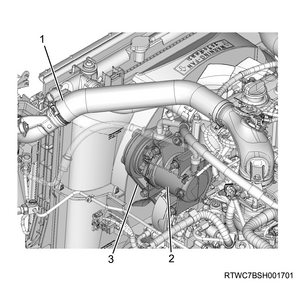
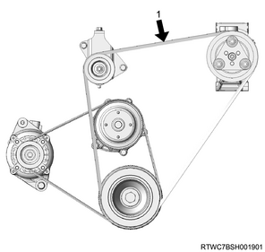

1. Install the A/C compressor assembly to the A/C compressor bracket.
Tightening torque： 51 N・m { 5.2 kgf・m / 38 lb・ft }
2. Connect the harness connector to the A/C compressor assembly.

1. Install the A/C pipe to the A/C compressor assembly.
Note
Tightening torque： 15 N・m { 1.5 kgf・m / 11 lb・ft }
1. Install the A/C compressor drive belt to the A/C compressor assembly.
1. Adjust tension to the specified value using a tension meter.
Note
Load： 98 N { 10 kg / 22 lb }

Note
| A/C compressor drive belt | ||
| If determining by flex amount | If using a sonic tension meter | |
| Amount of flex | Frequency of vibrations | |
| For a new product | ： 12.4 to 16.4 mm { 0.488 to 0.646 in } | ： 92 to 112 Hz |
| When readjusting tension | ： 16.5 to 19.1 mm { 0.650 to 0.752 in } | ： 80 to 92 Hz |
Note
Tightening torque： 41 N・m { 4.2 kgf・m / 30 lb・ft }
1. Install the intake hose to the intercooler.
Tightening torque： 5 N・m { 1 kgf・m / 44 lb・in }
Note
1. Fill refrigerant.
Caution